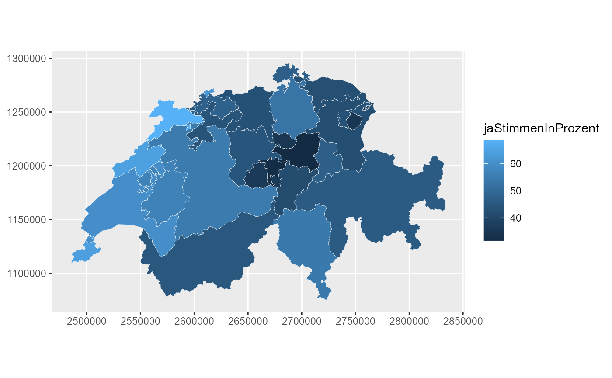
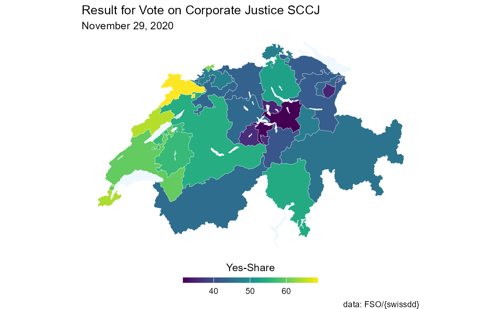
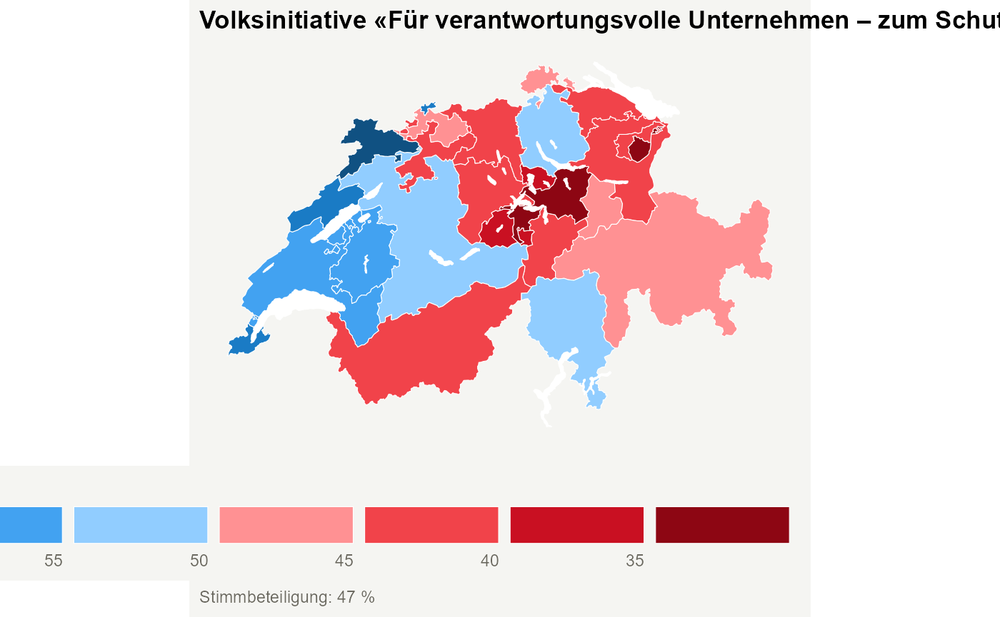

This functionality has been kindly added by David Zumbach.
The function get_geodata allows users to download
geographic information for different administrative units in
Switzerland. The function returns a simple feature
data.frame. Users should specify the level of
administrative units using the argument geolevel. The
following options are available:
-
nationalto download administrative boundaries of Switzerland -
cantonalto download administrative boundaries of cantons -
municipalityto download administrative boundaries of municipalities/communities -
zh_counting_districtsto download administrative boundaries of Zählkreise for the City of Zurich -
lakesto download boundaries of major lakes
An illustration of how one could utilize the functionionality of
swissdd to visualize vote outcomes for any national vote is
given here.
Plot voteshares “by hand”
Producing a map “by hand” allows for more flexibility. For example, you could simply download the geo-information and plot something entirely else. If you never ever want to produce a plot by hand, skip to the next sectionn.
# installation from CRAN (stable)
# install.packages("swissdd")
# install.packages("dplyr")
# installation from github (ongoing updates)
# devtools::install_github("politanch/swissdd")
library(swissdd)
packageVersion("swissdd")
#> [1] '1.1.6'
library(dplyr)
library(ggplot2)
library(sf)
library(viridis)
#download geo information
geo_canton <- get_geodata(geolevel = "canton")
geo_canton$canton_id <- as.numeric(geo_canton$canton_id)
# download data from API on the vote calles «Swiss coalition for Corporate justice SCCJ»
kovi_nat <- get_nationalvotes(votedates="2020-11-29", geolevel = "canton")%>%
dplyr::filter(id == 6360)%>%
dplyr::select(canton_id, jaStimmenInProzent)%>%
mutate(canton_id=as.numeric(canton_id))Combine the two data.frames.
can_df <- left_join(geo_canton, kovi_nat, by="canton_id")Plot the whole thing accordingly.

With this you can start prettifiyng the map according to your liking. Wee add the lakes as well here:
lakes <- swissdd::get_geodata(geolevel = "lakes")
ggplot(can_df)+
geom_sf(aes(fill=jaStimmenInProzent), color="white", size=.1)+
geom_sf(data=lakes, fill="aliceblue", color=NA)+
scale_fill_viridis(option="D",
name = "Yes-Share",
guide=guide_colorbar(title.position="top",
direction = "horizontal",
barheight = unit(2, units = "mm"),
barwidth = unit(50, units = "mm"),
title.hjust =0.5))+
theme_void()+
theme(legend.position="bottom")+
labs(title="Result for Vote on Corporate Justice SCCJ", subtitle="November 29, 2020",
caption="data: FSO/{swissdd}")
Plot voteshares with built-in function
If for some reason you don’t want to create your map from scratch you
could also rely on the function plot_nationalvotes() which
allows you to quickly plot turnout rates or yes-shares. In order to run
this function you have to specify the administrative level as well as
the official identification number of the vote you’re interested in.
plot_nationalvotes(votedate="2020-11-29", vote_id=6360, geolevel="canton")